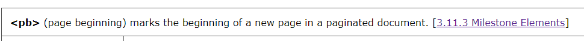
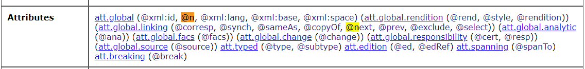
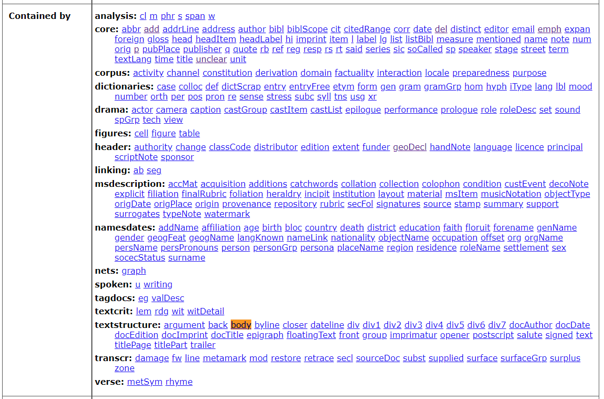
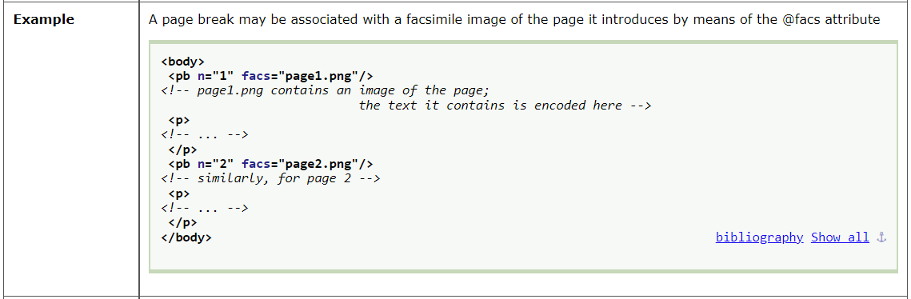

Reading documentation
Reading Documentation
TEI provide online documentation for each version of the guidelines. The current version of the guidelines is P5. These guidelines cover a lot of different use cases designed to help academics capture lots of different parts of a source.
When you first look at the documentation it can be tricky to understand. To help you, let us consider the page for the pb element. There is a description of the element an a link to a grouping of similar elements (here the grouping of Milestone Elements is relevant).

The pb element is part of the ‘core elements’. Dr James Cummings has an excellent set of slides about core components. You can see the slides by going here or viewing them below.
Elements can have attributes. For example, <pb n=“55”/> is a the pb element with the attribute n which has a value of 55. That indicates the start of page number 55. The is indicated by the @n in attributes.

Elements are contained within other elements. The pb element can be contained within the body element (as it is in the Orwell diary document) as well as any other element listed in the ‘Contained by’ section.

Another helpful section are the examples. These examples may not include your use case, but are reasonable guides. For instance, if you wanted to include the images of diary page then you would use the face attribute of the pb element.
